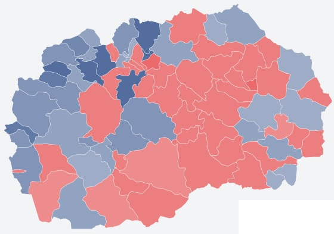

| Rreth Nesh | Promociaone | Kariera | Kontakt |
|---|
Alda has had and continues to grow, operating with over 41 markets and has over 500 employees. With its “Hard Discount – Always Low Price” operating model, alda Market offers nearly 2000 types of products, including well-known branded goods and Private Label – Own Brands. alda aims to reduce operating costs through professional and qualitative management and to reflect on the prices of products that consumers save every day. alda focuses on educating staff by raising employees’ awareness to provide the highest quality services and increase the credibility of its customers and suppliers.
From the moment you start buying on alda it means that you have made the decision to be a conscious consumer. When shopping at alda, you don’t need to spend all your time browsing brochures, collecting coupons or carrying different cards with you. At alda customers don’t spend money on: – product packaging – excessive marketing – name of the brand – decoration of objects and – excessive number of employees. Avoiding these unnecessary costs, alda prices are always low so our customers save every day.
By offering low waste prices, alda optimizes the company’s services by visiting several key principles – avoiding unnecessary sales that can be reflected in product prices; decoration, transportation, marketing, quality etc; – Provides effective logistics from the central warehouse – The portfolio holds the level of products with approximately 2000 and – with its purchasing power alda drives the suppliers and manufacturers you offer the most prices.